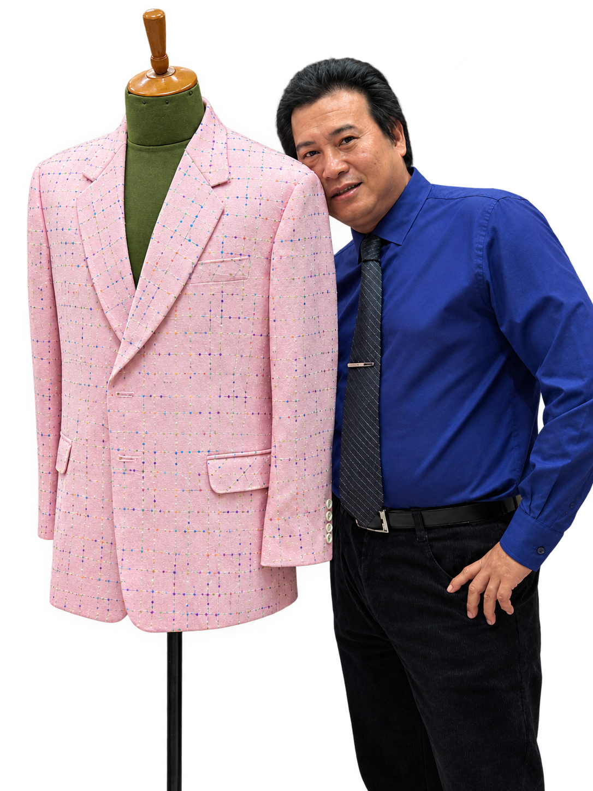
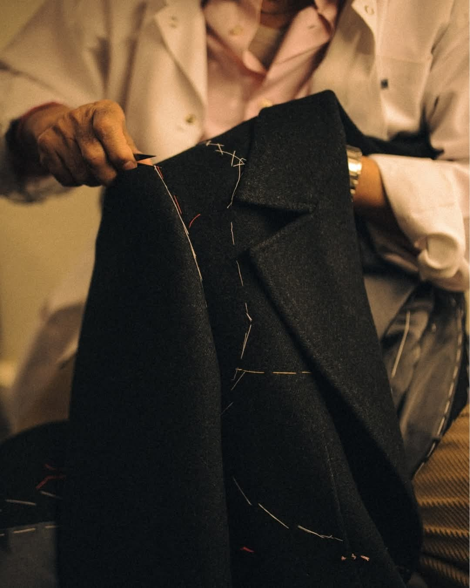
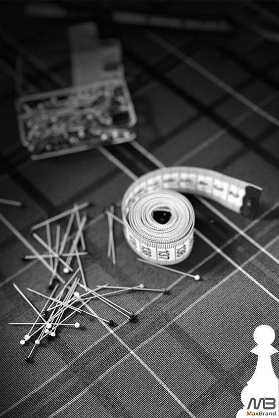
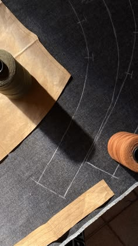

Đo bằng mắt, bằng tay
Dáng vai, tư thế đứng, thói quen cử động — thước dây chỉ ghi được một nửa.
Tiệm may · Mỹ Tho
Chuyên may Đầm & Veston — mỗi đường kim mũi chỉ được đo, vẽ, lược và may bằng đôi tay hiểu người mặc.


Chương I — Câu chuyện
Nhà May Phước theo đuổi lối may đo truyền thống: lắng nghe trước khi cắt, đo kỹ trước khi vẽ, thử đi thử lại trước khi may kín. Mỗi bộ veston, mỗi chiếc đầm rời tiệm là một bộ riêng — không có hai bộ giống hệt nhau, vì không có hai người giống hệt nhau.

Dáng vai, tư thế đứng, thói quen cử động — thước dây chỉ ghi được một nửa.
Áo được lược bằng tay để thử trên người, chỉnh xong mới may chắc.
Chỉ giao áo khi áo đã đứng đúng dáng người mặc.
Kéo để xoay · chọn vải bên cạnh
Chương II — Xưởng vải
Mỗi chất liệu có tính cách riêng: có loại nghiêm trang, có loại vui tươi. Treo thử từng tấm lên thanh đồng, xoay nhẹ để xem vải đổ.
Chương III — Số đo
Bản rập của mỗi người được vẽ từ chính những con số này. Chạm vào từng điểm trên bản vẽ để xem thợ may đo gì, và vì sao.
Chạm vào các điểm tròn trên bản vẽ
Chương IV — Tác phẩm
Rê chuột lên ảnh để soi từng mũi vải. Trên điện thoại, vuốt ngang để xem tiếp.
Chương V — Chuyên may
Vai vuông vắn, ve áo sắc nét, lưng áo đứng — mặc lên là tự nhiên thẳng lưng. May đo theo đúng dáng người.
Đặt may veston →Đường cắt mềm, ôm đúng điểm cần ôm — cho ngày cưới, buổi tiệc, hay đơn giản là ngày bạn muốn được nhớ.
Đặt may đầm →Chương VI — Quy trình

Bạn ghé tiệm hoặc hẹn trước qua điện thoại. Thợ đo kỹ từng số đo và lắng nghe dịp bạn sẽ mặc bộ đồ này.
Chọn chất liệu, màu sắc và kiểu dáng: ve áo, số cúc, kiểu túi, lớp lót — mọi chi tiết đều do bạn quyết định.
Từ số đo của riêng bạn, đường rập được vẽ phấn lên vải, rồi cắt từng đường dứt khoát.
Áo được lược chỉ tay để thử trên người. Chỉnh vai, chỉnh eo, chỉnh tay áo cho đến khi đứng dáng.
Là ủi, đính nhãn Phước, và giao áo — vừa vặn như được sinh ra cho bạn.
Thử áo ảo
Nhập số đo, ma-nơ-canh sẽ co giãn đúng dáng bạn. Chọn vải, ve áo, số cúc, kiểu túi và xem áo đổi ngay trên người. Ưng ý thì gửi cả cấu hình sang Zalo của tiệm.
Kéo để xoay · kéo thanh số đo để thấy áo co giãn
Ve áo
Số cúc
Kiểu túi
Độ ôm
Chương VII — Đặt lịch